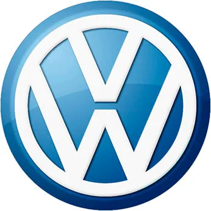
Работы по Volkswagen
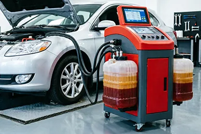
Аппаратная замена масла АКПП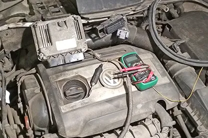
Ремонт блоков управления двигателем Volkswagen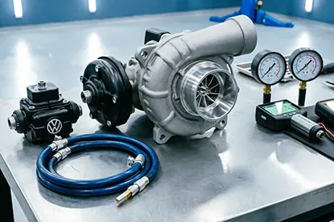
Ремонт турбин Volkswagen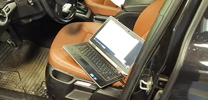
Компьютерная диагностика дизельных двигателей Volkswagen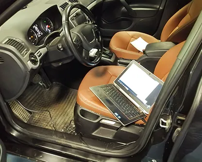
Компьютерная диагностика двигателя Фольксваген Ремонт АКПП Volkswagen
Ремонт АКПП Volkswagen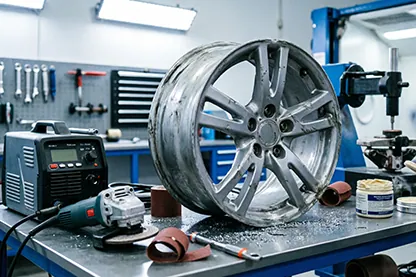
Ремонт автомобильных дисков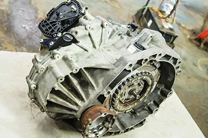
Ремонт DSG Volkswagen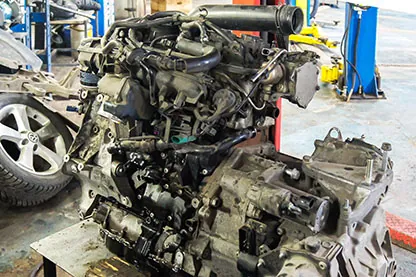
Ремонт двигателей Фольксваген Ремонт электропроводки Фольксваген
Ремонт электропроводки Фольксваген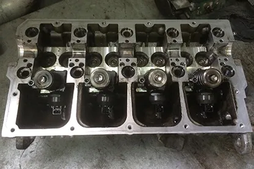
Ремонт ГБЦ Volkswagen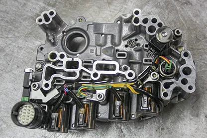
Ремонт гидроблока АКПП Volkswagen Ремонт гидротрансформаторов Фольксваген
Ремонт гидротрансформаторов Фольксваген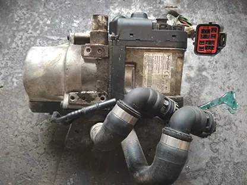
Ремонт отопителей Webasto и Eberspacher на Volkswagen Ремонт МКПП Volkswagen
Ремонт МКПП Volkswagen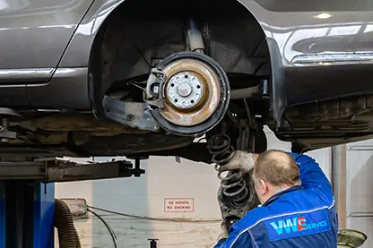
Ремонт подвески Volkswagen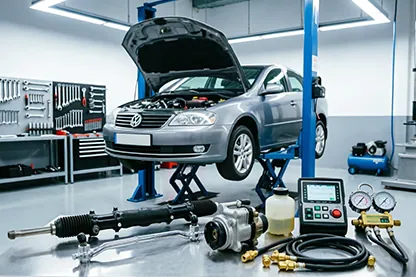
Ремонт рулевого управления Volkswagen Ремонт систем охлаждения Volkswagen
Ремонт систем охлаждения Volkswagen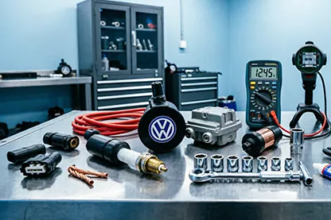
Ремонт системы зажигания двигателей Фольксваген Ремонт генераторов и стартеров Volkswagen
Ремонт генераторов и стартеров Volkswagen Ремонт стеклоподъемников Volkswagen
Ремонт стеклоподъемников Volkswagen Диагностика ТНВД и дизельных форсунок Фольксваген
Диагностика ТНВД и дизельных форсунок Фольксваген Ремонт тормозной системы Volkswagen
Ремонт тормозной системы Volkswagen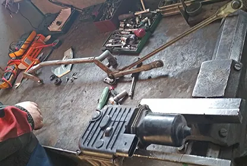
Ремонт трапеции стеклоочистителя Volkswagen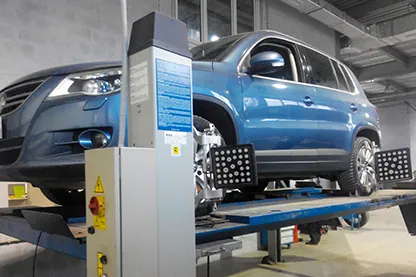
Сход-развал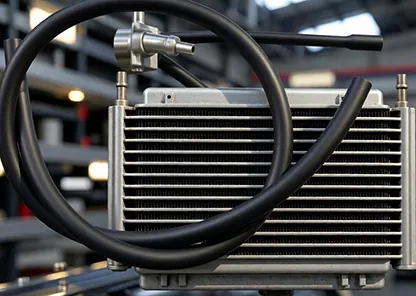
Установка дополнительного радиатора охлаждения Volkswagen Замена ремня ГРМ Volkswagen
Замена ремня ГРМ Volkswagen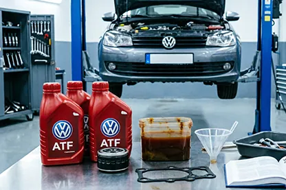
Замена масла АКПП Volkswagen Замена масла в двигателе Volkswagen
Замена масла в двигателе Volkswagen Замена сцепления DSG на Фольксваген
Замена сцепления DSG на Фольксваген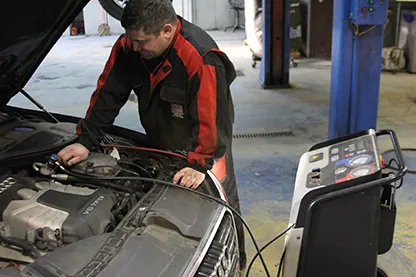
Заправка, ремонт систем кондиционированияТехцентр «VWS» в Москве предлагает весь спектр услуг по обслуживанию и ремонту Фольксваген. Сотрудники автосервиса располагают всем необходимым современным оборудованием. Опыт работы мастеров от 5 лет. Это гарантирует высокое качество ремонта и надежность всех систем автомобиля в дальнейшем процессе эксплуатации.
На все выполненные работы клиентам предоставляется гарантия. Конкурентное преимущество нашего автомобильного сервиса – это ответственный подход к работе в сочетании с низкими ценами на ремонт и техническое обслуживание. Вы можете убедиться в этом сами, обратившись в наш автосервис!
Как происходит ремонт и обслуживание
Вы приезжаете к нам в сервисный центр, сообщаете о проблеме, специалисты компании производят осмотр автомобиля, делают подсчет стоимости ремонта и запчастей VW, согласуют их с вами. После чего происходит разборка и ремонт.
Нам нет смысла тянуть время, мы следим за качеством обслуживания, поэтому работа будет сделана быстро, в порядке очередности. В сервисном центре установлено современное оборудование, на котором легко проводить диагностику и ремонт автомобилей Volkswagen.
Цены на ремонт Фольксваген
| Наименование услуги | Цена, руб. |
|---|---|
| Техническое обслуживание (без стоимости расходных материалов) | По запросу |
| Диагностика подвески / в случае ремонта | По запросу / Бесплатно |
| Замена масла ДВС и фильтра | По запросу |
| Замена воздушного фильтра | По запросу |
| Замена салонного фильтра | По запросу |
| Замена топливного фильтра (проходной) | По запросу |
| Замена передних тормозных колодок (включая чистку тормозных механизмов) | По запросу |
| Замена задних тормозных колодок (включая чистку тормозных механизмов) | По запросу |
| Замена передних тормозных дисков (включая замену колодок) | По запросу |
| Замена задних тормозных дисков (включая замену колодок) | По запросу |
| Замена втулок стабилизатора (все на одной оси) | По запросу |
| Замена стоек стабилизатора (все на одной оси) | По запросу |
| Обслуживание тормозных механизмов | По запросу |
| Замена тормозной жидкости | По запросу |
| Замена сайлентблоков передних рычагов | По запросу |
| Замена свечей зажигания двигатель | По запросу |
| Замена ГРМ автомобиля | По запросу |
| Замена цепей привода ГРМ двигатель | По запросу |
| Замена водяного насоса помпа | По запросу |
| Сход-развал | По запросу |
| Чистка инжектора | По запросу |
| Замена масла АКПП | По запросу |
| Замена охлаждающей жидкости | По запросу |
| Замена жидкости гидроусилителя руля | По запросу |
| Заправка кондиционера (слить/залить) | По запросу |
| Замена аккумуляторной батареи | По запросу |
| Компьютерная диагностика ЭСУД | По запросу |
* Если не нашли необходимой услуги, обратитесь к нам, и мы подскажем стоимость ремонта автомобиля Volkswagen. Цены на работу варьируются в зависимости от комплектации и марки, точную стоимость можно узнать в сервисе позвонив по телефону +7 (495) 632-01-20, либо в разделе " Вопрос-Ответ".
Фотогалерея - ремонт автомобилей Volkswagen
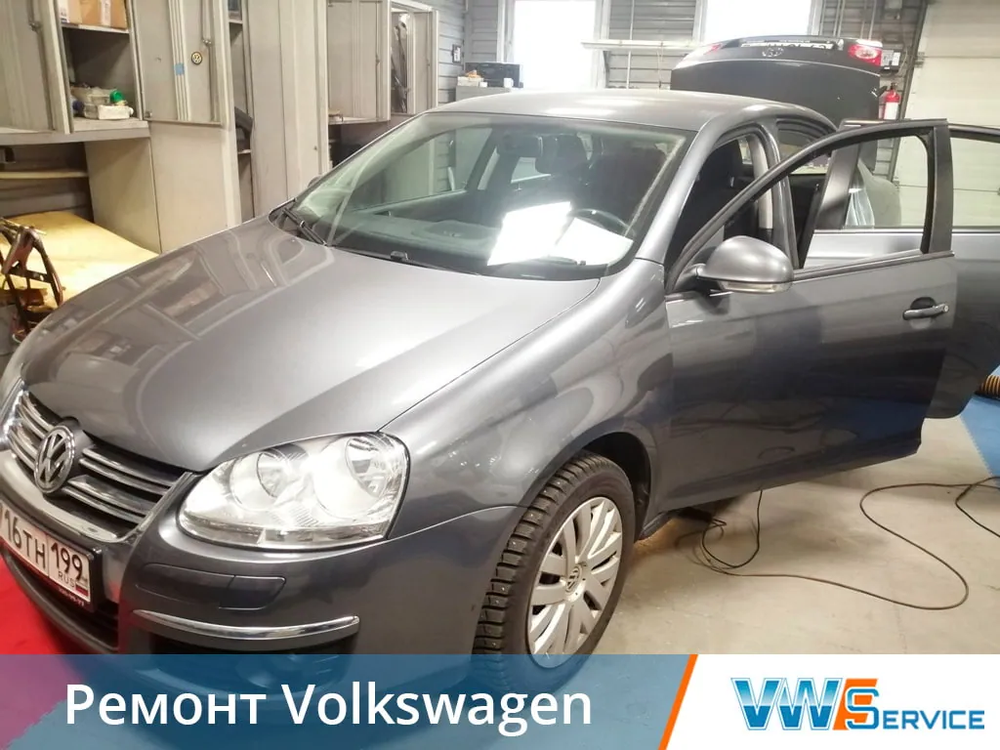
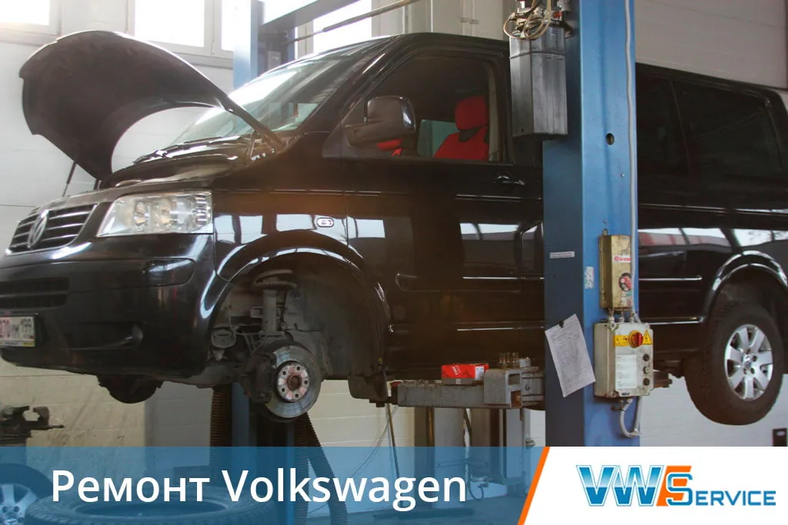
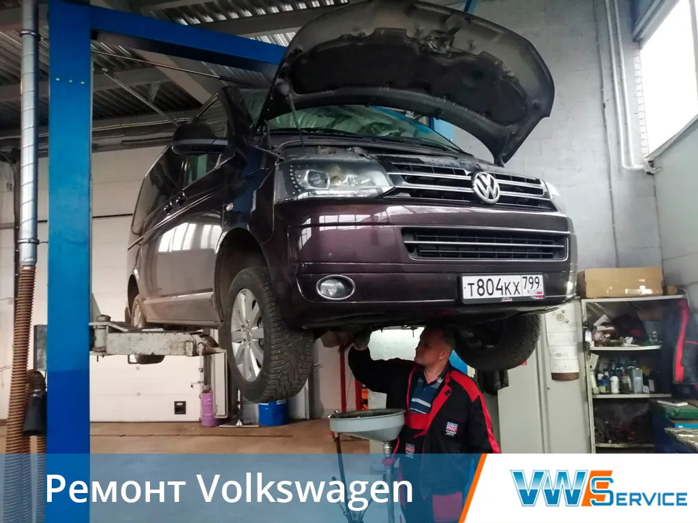
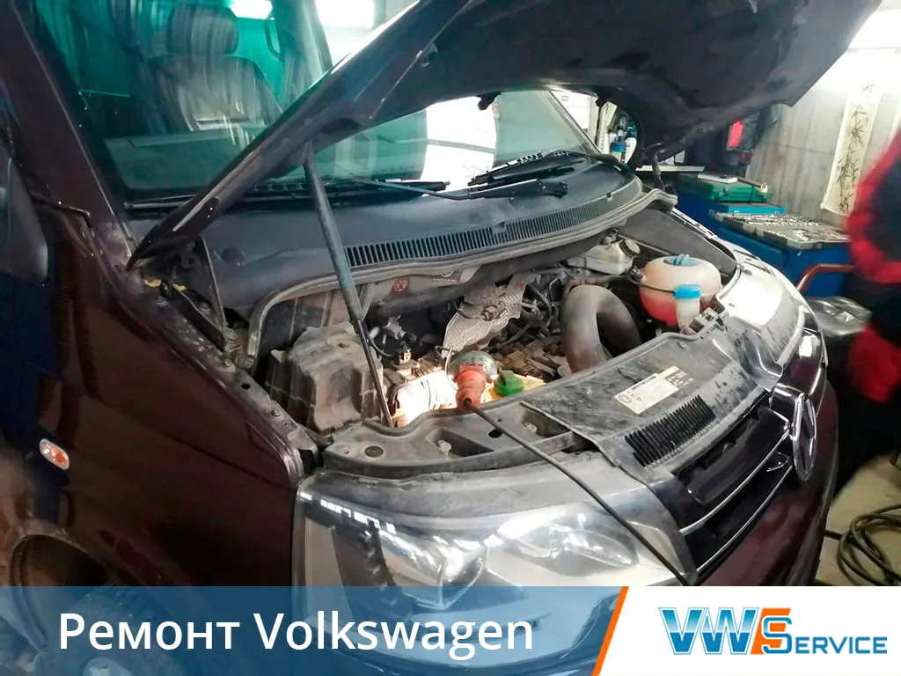
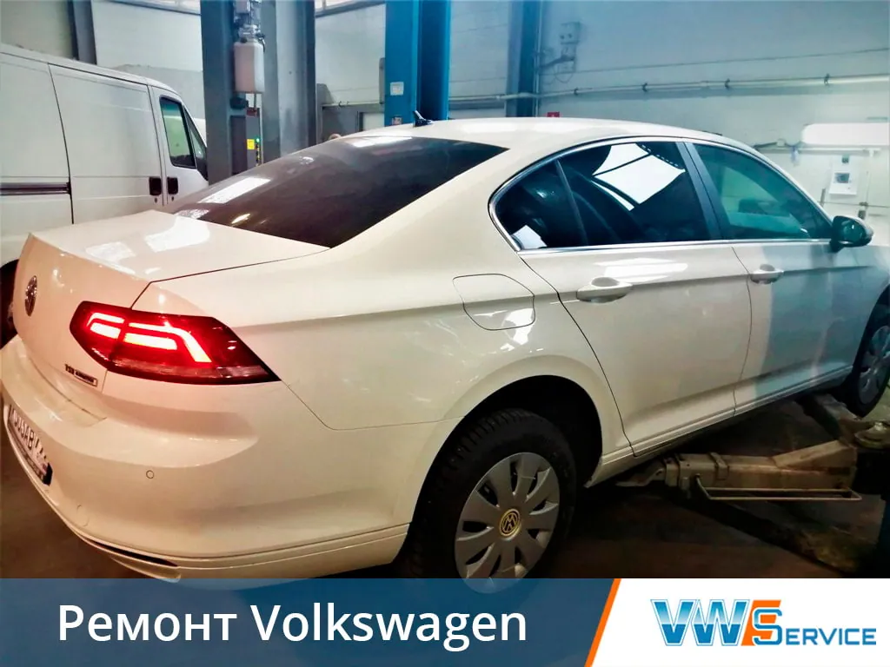
Выберите услугу
Слесарный ремонт ТО
Ремонт двигателей (ДВС)Ремонт ГБЦЗамена масла в двигателеЗамена ГРМРемонт подвескиРемонт рулевого управленияДиагностика турбинРемонт тормозной системыРемонт системы охлажденияРемонт дисковСход-развалДизельная аппаратура
ТНВД, насос-форсункиДиагностика дизельного двигателяРемонт трансмиссий DSG АКПП МКПП
Ремонт АКППРемонт DSGЗамена сцепления DSGРемонт гидроблокаРемонт гидротрансформатораЗамена масла АКППУстановка дополнительного радиатораАппаратная замена масла в АКППРемонт МКППЭлектрооборудование
Ремонт трапеции стеклоочистителяРемонт блоков управленияРемонт электропроводкиРемонт стеклоподъемниковКомпьютерная диагностика двигателяРемонт стартеров, генераторовРемонт системы зажигания ДВСАвтономные отопители, автокондиционеры, аргон
Заправка, ремонт систем кондиционированияРемонт и установка автономных отопителейВ нашем сервисе
Ремонт Фольксваген Быстро и качественно,
Обслуживание по низкой цене,
Гарантия на работу
Отправить заявку
Отзывы клиентов
При езде на автомобиле появился стук в передней части, обратилась в автосервис, выяснилось, что проблема в ступице. Работники озвучили цену запчастей и время работ. Оставила машину на ремонт, через четыре дня приехала забрала, езжу уже неделю, никаких звуков нет, дали гарантию на свою работу, хорошая компания.
Рита
Модель авто: Фольксваген Гольф
10.10.2020
Добрый день! Большая благодарность сотрудникам сервиса. Провели диагностику и отремонтировали ходовую в кратчайший срок. Как говориться дешево и качественно. Буду рекомендовать своим знакомым и партнерам. Еще раз огромное спасибо!!!
Игорь Георгиевич
Модель авто: VW CARAVELLA
16.10.2018
МОЛОДЦЫ!!! Моя история очень долгая (6 месяцев), но я коротко. После замены цепи автомобиль периодически начал дергаться и загорался чек. Обратившись к ребятам которые меняли цепь, пояснив данную проблему (они работают в официальном сервисе ШКОДА), привозил к ним авто 3 раза - безрезультатно. 5-ть раз отдавал авто диагносту из АУДИ, ни хрена...После обращения к официалам, понял, что ценник может достигнуть более 100000 руб (замены агрегатов, без гарантии...) Приехав сюда наугад, я был приятно поражен отношением ребят к своей работе. Отдавал авто три раза, для поездок и поиска причины и ни разу не почувствовал тупика в проблеме, со стороны персонала. ИТОГ: ЗАМЕНА ГАЗОРАСПРЕДЕЛИТЕЛЬНОГО КЛАПАНА - 3200руб+ диагностика 1000руб. ОТДЕЛЬНОЕ СПАСИБО ДИМЕ - диагносту!!!!!
Сергей
Модель авто: Фольксваген В6 2008г
27.10.2015
Наконец-то нашел сервис, в котором разобрались с моей АКПП! Был я много, где, а решили всё только тут. Цены вполне адекватные и на запчасти, и на сам ремонт (сравнивал с другими) Хочу сказать огромное спасибо всему персоналу автосервиса, особенно мастеру по ремонту АКПП Денису!
Олег
Модель авто: VW Passat
15.10.2015
Этот сервис порекомендовал мне знакомый. Машина постоянно глохла, делала дважды диагностику в автосервисе на Кавказском бульваре - мастера говорили, что всё работает как часы. Приехав сюда, была поражена качеством обслуживания и ценами. Сразу нашли неисправность и через 3 часа я уже ехала домой. Мастер порекомендовал приехать и сделать диагностику повторно и что удивительно бесплатно. Всем рекомендую обращаться в этот сервис. P.S. На Кавказский бульвар больше ни ногой
Светлана
Модель авто: WV B4
11.04.2013
Контакты
- г. Москва, 1-й Дорожный проезд, д. 5АЮАО Москвы. Ближайшее метро — «Южная»
- Ежедневно с 8:30 до 20:30Без выходных. Приём автомобилей — круглосуточно
- +7 (495) 260-06-02Эвакуатор: +7 (495) 796-29-99